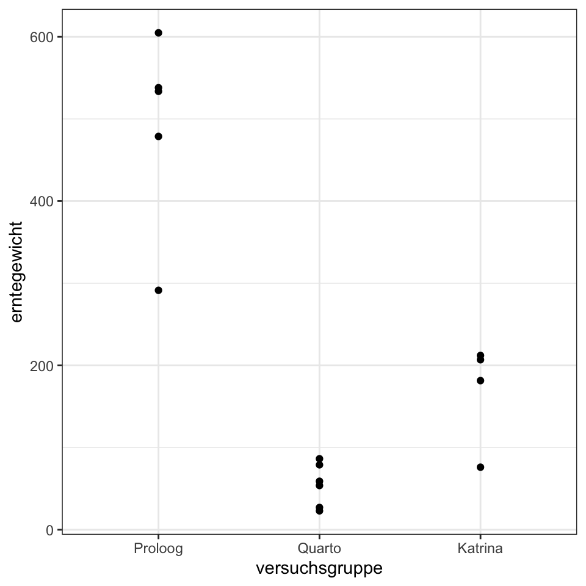
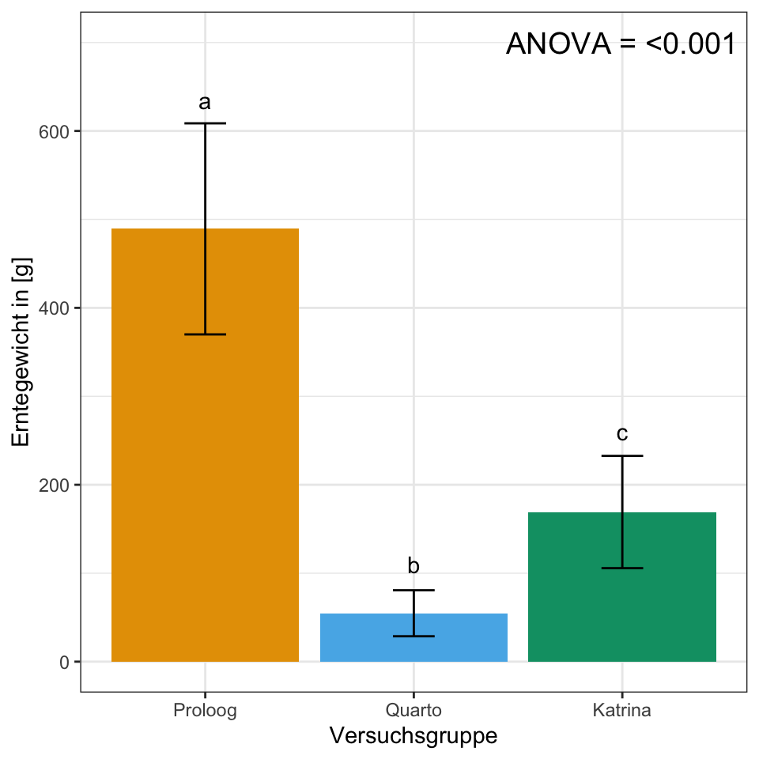
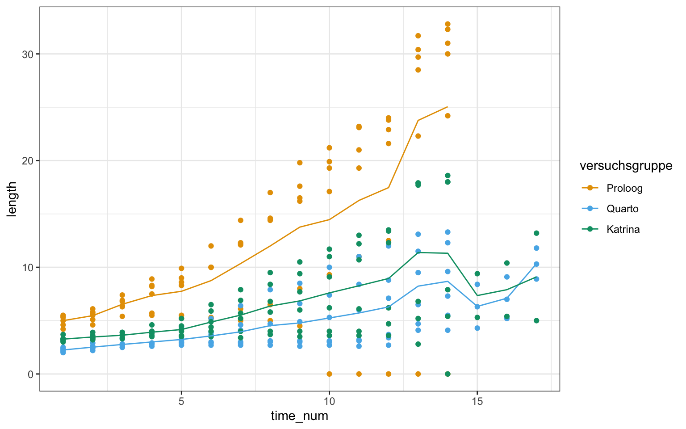
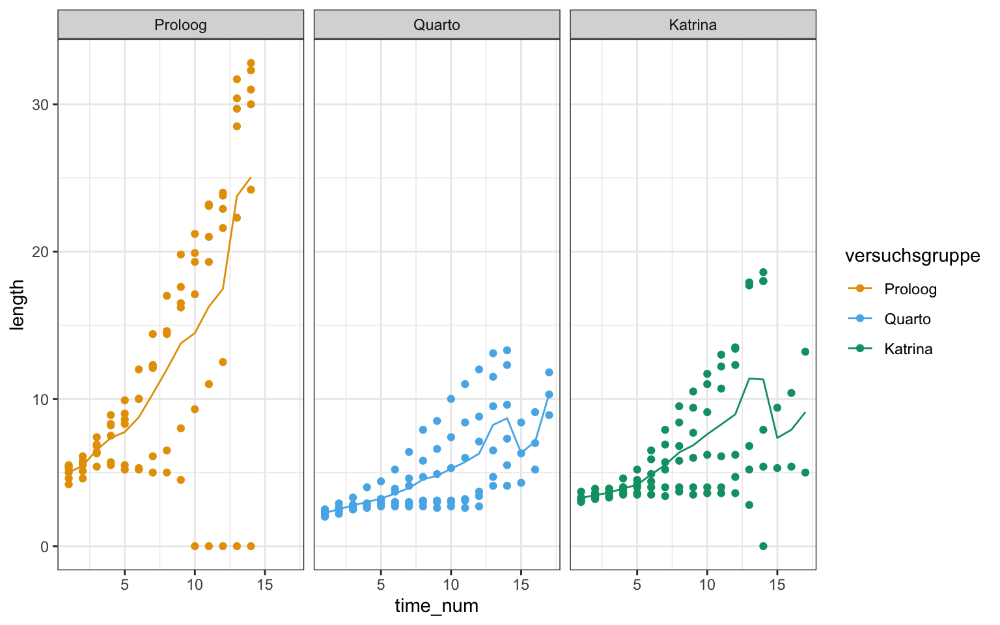
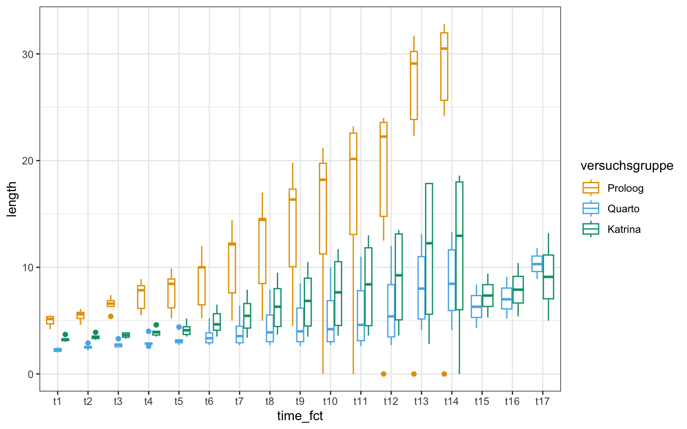
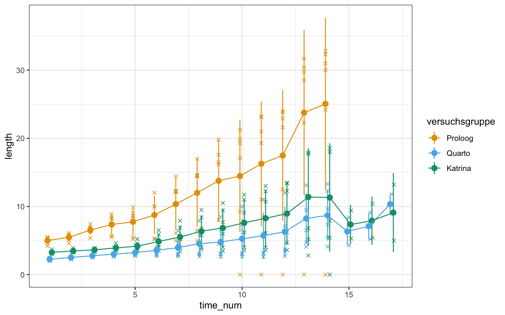
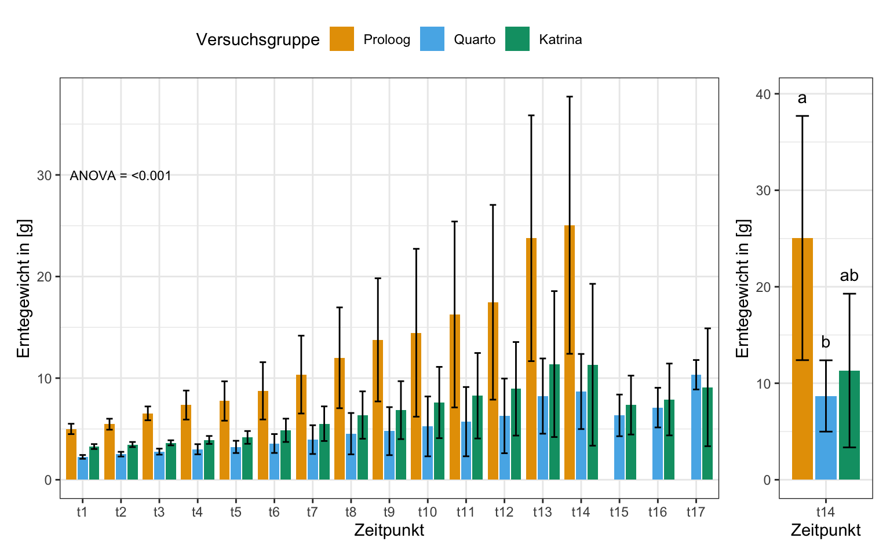

pacman::p_load(tidyverse, readxl, parameters,
effectsize, magrittr, multcomp,
multcompView, rcompanion, rstatix,
emmeans, see, performance, janitor,
patchwork,
conflicted)
## resolve some conflicts with same function naming
conflicts_prefer(dplyr::select)
conflicts_prefer(dplyr::filter)
conflicts_prefer(effectsize::eta_squared)14 Steuerung der vegetativen Entwicklung krautiger Pflanzen (44B0608) - Teil 2
Version vom May 13, 2023 um 10:17:09
Wir wollen folgende R Pakete in diesem Kapitel nutzen.
Es geht hier um das Modul Steuerung der vegetativen Entwicklung krautiger Pflanzen (44B0608)
gurke_raw_tbl <- read_excel("data/wachstum_gurke.xlsx") %>%
clean_names() %>%
mutate(versuchsgruppe = as_factor(versuchsgruppe),
erntegewicht = ifelse(erntegewicht == 0, yes = NA, no = erntegewicht))
gurke_len_tbl <- gurke_raw_tbl %>%
filter(str_detect(versuchsgruppe, "L$")) %>%
mutate(versuchsgruppe = factor(versuchsgruppe,
labels = c("Proloog", "Quarto", "Katrina")))
gurke_dia_tbl <- gurke_raw_tbl %>%
filter(str_detect(versuchsgruppe, "D$")) %>%
mutate(versuchsgruppe = factor(versuchsgruppe,
labels = c("Proloog", "Quarto", "Katrina")))gurke_ernte_tbl <- gurke_len_tbl %>%
select(versuchsgruppe, erntegewicht)ggplot(gurke_ernte_tbl, aes(versuchsgruppe, erntegewicht)) +
theme_bw() +
geom_point()
fit <- lm(erntegewicht ~ versuchsgruppe, data = gurke_ernte_tbl)
fit %>%
anova() %>%
parameters()Parameter | Sum_Squares | df | Mean_Square | F | p
----------------------------------------------------------------
versuchsgruppe | 5.35e+05 | 2 | 2.68e+05 | 44.36 | < .001
Residuals | 72413.12 | 12 | 6034.43 | |
Anova Table (Type 1 tests)fit %>%
eta_squared()# Effect Size for ANOVA
Parameter | Eta2 | 95% CI
------------------------------------
versuchsgruppe | 0.88 | [0.73, 1.00]
- One-sided CIs: upper bound fixed at [1.00].gurke_ernte_tbl %$%
pairwise.t.test(erntegewicht, versuchsgruppe,
pool.sd = TRUE,
p.adjust.method = "none")
Pairwise comparisons using t tests with pooled SD
data: erntegewicht and versuchsgruppe
Proloog Quarto
Quarto 8.4e-07 -
Katrina 5.0e-05 0.042
P value adjustment method: none gurke_ernte_tbl %$%
pairwise.t.test(erntegewicht, versuchsgruppe,
pool.sd = TRUE,
p.adjust.method = "none") %>%
extract2("p.value") %>%
fullPTable() %>%
multcompLetters()Proloog Quarto Katrina
"a" "b" "c" stat_tbl <- gurke_ernte_tbl %>%
group_by(versuchsgruppe) %>%
summarise(mean = mean(erntegewicht, na.rm = TRUE),
sd = sd(erntegewicht, na.rm = TRUE),
se = sd/sqrt(n()))ggplot(stat_tbl, aes(x = versuchsgruppe, y = mean,
fill = versuchsgruppe)) +
theme_bw() +
geom_bar(stat = "identity") +
geom_errorbar(aes(ymin = mean-sd, ymax = mean+sd),
width = 0.2) +
labs(x = "Versuchsgruppe", y = "Erntegewicht in [g]") +
theme(legend.position = "none") +
annotate("text",
x = 1:3,
y = c(635, 110, 260),
label = c("a", "b", "c")) +
annotate("text", x = 3, y = 700,
label = "ANOVA = <0.001", size = 5) +
scale_fill_okabeito()
ggsave("img/barplot_erntegewicht.png",
width = 5, height = 3)gurke_time_len_tbl <- gurke_len_tbl %>%
select(-pfl, -erntegewicht) %>%
pivot_longer(cols = t1:t17,
values_to = "length",
names_to = "time") %>%
mutate(time_fct = as_factor(time),
time_num = as.numeric(time_fct))ggplot(gurke_time_len_tbl, aes(time_num, length, color = versuchsgruppe)) +
theme_bw() +
geom_point() +
stat_summary(fun = "mean", fun.min = "min", fun.max = "max", geom = "line") +
scale_color_okabeito()
ggplot(gurke_time_len_tbl, aes(time_num, length, color = versuchsgruppe)) +
theme_bw() +
geom_point() +
stat_summary(fun = "mean", fun.min = "min", fun.max = "max", geom = "line") +
facet_wrap(~ versuchsgruppe) +
scale_color_okabeito() 
ggplot(gurke_time_len_tbl, aes(time_fct, length, color = versuchsgruppe)) +
theme_bw() +
geom_boxplot() +
scale_color_okabeito()
ggplot(gurke_time_len_tbl, aes(time_num, length, color = versuchsgruppe)) +
theme_bw() +
geom_jitter(position=position_dodge(0.3), shape = 4) +
stat_summary(fun.data="mean_sdl", , fun.args = list(mult = 1),
geom="pointrange", position=position_dodge(0.3)) +
stat_summary(fun = "mean", fun.min = "min", fun.max = "max", geom = "line",
position=position_dodge(0.3)) +
scale_color_okabeito()
lm(length ~ versuchsgruppe + time + versuchsgruppe:time, gurke_time_len_tbl) %>%
anova()Analysis of Variance Table
Response: length
Df Sum Sq Mean Sq F value Pr(>F)
versuchsgruppe 2 2705.7 1352.84 64.7450 < 2e-16 ***
time 16 3407.8 212.99 10.1933 < 2e-16 ***
versuchsgruppe:time 29 882.8 30.44 1.4569 0.06953 .
Residuals 219 4576.0 20.89
---
Signif. codes: 0 '***' 0.001 '**' 0.01 '*' 0.05 '.' 0.1 ' ' 1gurke_time_len_tbl %>%
filter(time_fct == "t14") %$%
pairwise.t.test(length, versuchsgruppe,
pool.sd = FALSE,
p.adjust.method = "none") %>%
extract2("p.value") %>%
fullPTable() %>%
multcompLetters()Proloog Quarto Katrina
"a" "b" "ab" stat_tbl <- gurke_time_len_tbl %>%
group_by(versuchsgruppe, time_fct) %>%
summarise(mean = mean(length, na.rm = TRUE),
sd = sd(length, na.rm = TRUE),
se = sd/sqrt(n()),
cld_pos = mean + sd + 2)p1 <- ggplot(stat_tbl, aes(x = time_fct, y = mean,
fill = versuchsgruppe)) +
theme_bw() +
geom_bar(stat = "identity", position = position_dodge2(preserve = "single")) +
geom_errorbar(aes(ymin = mean-sd, ymax = mean+sd),
width = 0.5, position = position_dodge(0.9)) +
labs(x = "Zeitpunkt", fill = "Versuchsgruppe", y = "Erntegewicht in [g]") +
annotate("text", x = 2, y = 30,
label = "ANOVA = <0.001", size = 3) +
theme(legend.position = "top") +
scale_fill_okabeito()stat_t14_tbl <- stat_tbl %>%
filter(time_fct == "t14")p2 <- ggplot(stat_t14_tbl, aes(x = time_fct, y = mean,
fill = versuchsgruppe)) +
theme_bw() +
geom_bar(stat = "identity", position = position_dodge2(preserve = "single")) +
geom_errorbar(aes(ymin = mean-sd, ymax = mean+sd),
width = 0.5, position = position_dodge(0.9)) +
labs(x = "Zeitpunkt", fill = "Versuchsgruppe", y = "Erntegewicht in [g]") +
annotate("text",
x = c(0.7, 1, 1.3),
y = stat_t14_tbl$cld_pos,
label = c("a", "b", "ab")) +
theme(legend.position = "none") +
scale_fill_okabeito()p1 + p2 +
plot_layout(widths = c(7, 1))
ggsave("img/time_barplot.png",
width = 8, height = 5)